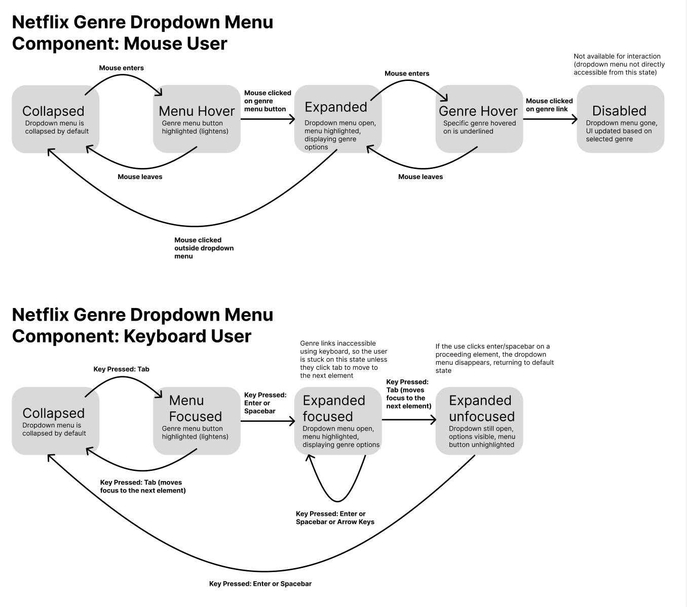

Context / Problem
Dropdown menus are a common UI element used to present different choices to a user in a compact space. Although they are used widely across the web, their usability and accessibility can vary significantly. Some are smooth and intuitive, while others feel like a puzzle you never signed up for.
Netflix's genre dropdown, for example, disables itself after selection, making it frustrating for users who want to switch categories. In this case study, I compare different instances of dropdown menus across applications, analyze their input and output behavior, and model user interactions using state diagrams. Finally, I propose a redesign of Netflix's genre dropdown to enhance its usability and accessibility.
Audience
This design focuses on users of streaming platforms, particularly those using Netflix on web or mobile platforms. Many of these users navigate with a mouse, keyboard, or touchscreen, and include individuals with motor impairments or those relying on assistive technologies like screen readers. These users need responsive, intuitive dropdowns that support both accessibility and efficiency in browsing.
Design Analysis
Popular Examples of Dropdowns
To better understand how dropdowns work, I examined three widely used applications:
Netflix (Genre Dropdown)
Web Version
Mobile Version
Apple Music (Three-Bar Menu)
Web Version
Mobile Version
Microsoft Word (Font Menu)
Web Version
Mobile Version
Input Methods: How Users Interact with Dropdowns
Dropdown menus components behave differently across applications based on input method. This section summarizes how each of the three application's respond to mouse/touchpad, keyboard, and touch inputs. Surprisingly, I noticed that Netflix had limited keyboard functionality without a screen reader. Furthermore, its desktop version's dropdown menu lacked a clear "X" button to close it, unlike its mobile version's.
| Mouse/Touchpad | Keyboard | Touch | |
|---|---|---|---|
| Netflix (Genre Dropdown) |
• Click the Genres button to open the dropdown • Scroll and click to select a genre • No clear "X" button to close—clicking outside dismisses it |
• Tab navigates to the dropdown, Enter opens it • Arrow keys navigate, Enter selects, Esc closes • Limited keyboard support without screen reader |
• Tap to open "All Categories" dropdown • Scroll and tap to select a genre • Click "X" to close (not available on desktop) |
| Apple Music (Three-Bar Menu) |
• Click the three-bar menu to open • Options appear as an overlay (e.g., "Add to Playlist") • Click outside to close |
• Tab navigates to the three-bar menu • Spacebar/Arrow keys highlight options • Esc closes the menu • Better keyboard support than Netflix |
• Tap three-bar menu to expand options • Tap a selection (e.g., "Add to Playlist") • Tap outside to exit |
| Microsoft Word (Font Menu) |
• Click to open the font dropdown • Scroll to browse fonts, click to select • Click outside to close |
• Tab navigates through the Ribbon toolbar • Enter selects font menu, Arrow keys navigate • Esc closes the menu • Best keyboard support of the three (Autocomplete allows typing font names) |
• On iPhone app, highlight text to activate the font menu • Scroll to browse fonts (no text input) • Tap to select, tap outside to close |
Output Feedback: State Change Feedback
Dropdown menus provide visual, textual, and screen reader feedback (VoicOover on mac) to help users understand their current state. This section summarizes how each of the three applications communicates state changes through visual cues, text updates, and screen reader focus order. For Netflix, note that a static textbox (not available for interaction) of the selected genre replaced the dropdown menu once a genre was selected, effectively disabling it. I found this behavior strange, as it limited the user's ability to easily change their selection.
| Visual Feedback | Textual Feedback | Screen Reader/Focus Order | |
|---|---|---|---|
| Netflix (Genre Dropdown) |
• Dropdown button highlights on hover • Dropdown expands on click, forming a rectangle • UI updates based on selection (e.g., new horror content displayed below) |
• Hovered genre name is underlined • Selected genre replaces the dropdown menu |
• Announces genre button • Announces each linked genre category • Logical focus order: Genre button → Genres listed sequentially (top to bottom, left to right) |
| Apple Music (Three-Bar Menu) |
• Selected option is highlighted on hover/click (e.g., play next song highlighted) • Three-bar menu highlighted briefly on click |
• Selected option (e.g., "Add to Playlist") updates UI accordingly • Some options provide confirmation text (e.g., "Added to Playlist") |
• Announces each option out loud, includes number of options • Logical focus order: More Button → Each option listed sequentially • Conveniently lists submenus too (e.g., share with multiple sharing options) |
| Microsoft Word (Font Menu) |
• Dropdown arrow highlighted on click while menu is active • Hovered fonts highlight as the cursor moves |
• Selected font name appears in the selection box • Font name is highlighted in the text box after selection |
• Reads each font name aloud when hovered • Logical focus order: Toolbar → Dropdown → Fonts listed alphabetically • Submenus announced for fonts with variations (e.g., "Arial → Arial Bold") |
State Modeling
Let's analyze the behavior of our Netflix genre dropdown menu component using state diagrams. First, let's model the dropdown's current state for both mouse and keyboard users as it is presently implemented.
The current state model reveals several issues. It isn't possible to navigate through the dropdown menu using the keyboard alone, and the dropdown menu becomes disabled once a genre is selected, making it inefficient to change selections. The video below demonstrates these limitations:

Let's now examine the revised state model that addresses these limitations:
Revised State Model
The redesign allows reopening the dropdown and includes complete keyboard navigation with an "X" button to close it.
Redesign Proposal
To address the usability issues, I redesigned the dropdown in two states:
Initial Dropdown State
Selected Genre State
Reflection
The original Netflix dropdown's lack of keyboard support and its deactivation after selection created significant usability barriers, particularly for users with motor impairments or those relying on assistive technologies. Our redesign addresses these issues through continuous interactivity, clear focus states, and improved keyboard support. This project demonstrates how designing with accessibility in mind creates a better experience for all users, not just those with specific needs.